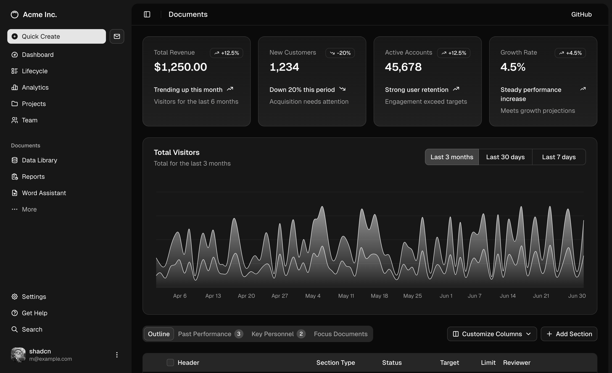

For the people doing the work
A clearer picture.
A calmer day.

Projects. Priorities. A plan.Meet your workspace
A little less back-and-forth.
A shared place for your projects, your clients, and whatever comes next.
Bring the details together. Give the work some space.
For the people doing the work
For the people you work with

A look inside: illustrative workspace screens, ready to make your own.
Less managing the work.
More making it happen.
The experience
Good collaboration should feel natural. Choose a view to see
how the pieces can fit into your day.
01 / FIND YOUR FOCUS
Pull the important details into view. See what moved forward, what needs a decision, and where you can make the most difference.
Take a closer lookThe everyday overview
02 / MAKE SPACE FOR PROGRESS
A new request shouldn't mean a new thread to follow. Keep the brief, the conversation, and the next step in the same place.
Explore a sample projectMonday, with a little clarity.
Brand direction · Shared with client
Website concept · Your next step
Final files · Coming up next
01 / FEEL PART OF THE PICTURE
Find the latest update without searching your inbox. A simple shared view gives every conversation a useful starting point.
Visit a sample workspaceThe client perspective
02 / KEEP THE CONVERSATION MOVING
Give ideas a place to land. Share what you need, add the helpful details, and keep decisions close to the work they belong to.
Explore the sample requestsA little update for you
Your team has shared a new direction.
Take a look, leave a thought, make it yours.
A note on working together
For the question that unlocks an idea. For a thoughtful handover. For the small details that make people feel part of something.
That's the kind of working day we're making room for.
A place to start
A simple starting point for a small team.
No complicated seat maths.
One shared workspace
Billed monthly. A little room to begin.
Example plan for this design. No purchase or subscription is created.
A few useful answers
This is an interactive website design with an illustrative workspace preview. Your site owner can connect real project data, accounts, and requests before launching a working service.
Yes. The copy, photographs and product imagery, colors, typography, and sections are editable. The original source and its open-source licenses are included with the website export.
The team view focuses on planning and delivery. The client view brings shared updates and decisions into focus. Switch between them above to explore both perspectives.
No. Pricing is illustrative and the billing toggle only changes the displayed example. No payment details are requested and no subscription is created.
Find a little more common ground.